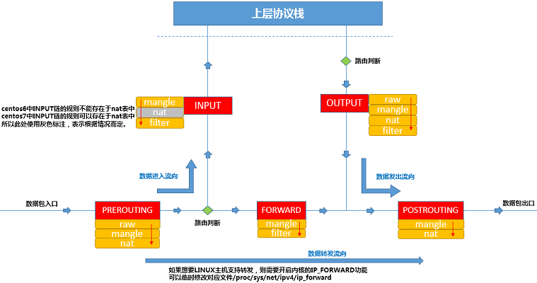
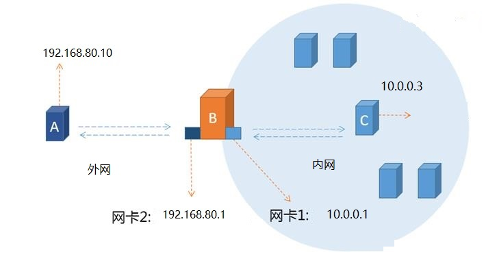
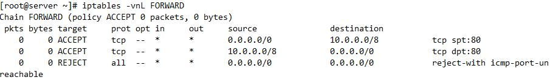
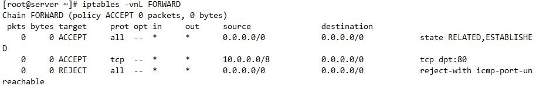
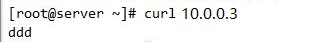

iptables作为网络防火墙
网络防火墙往往处于网络的入口或者边缘，那么，如果想要使用iptables充当网络防火墙，iptables所在的主机则需要处于网络入口

当外部网络中的主机与网络内部主机通讯时，不管是由外部主机发往内部主机的报文，还是由内部主机发往外部主机的报文，都需要经过iptables所在的主机，由iptables所在的主机进行"过滤并转发"，所以，防火墙主机的主要工作就是"过滤并转发"
在FORWARD链上定义规则，注意以下几个问题：
(1) 请求-响应均经由FORWARD链，要注意规则的方向性；
(2)如果可以启用conntrack机制，建议将双方向的状态为ESTABLISHED的报文直接放行
示例：3台虚拟机，A、B、C
A主机与B主机网卡2在vm1网络，B主机网卡1与C主机在vm2

1.需要打开路由转发功能
查看当前主机是否已经开启了核心转发，0表示为开启，1表示已开启
cat /proc/sys/net/ipv4/ip_forward
(1)如果需要永久打开路由转发功能，可修改sysctl.conf配置文件
vim /etc/sysctl.conf
net.ipv4.ip_forward = 1 //将0（关闭）改为1（开启）
sysctl -p //读取修改后的配置
(2）如果只希望临时开启路由转发，可执行以下操作
echo 1 > /proc/sys/net/ipv4/ip_forward
或
sysctl -w net.ipv4.ip_forward=1
2.在主机B上添加FORWARD规则
配置规则时需要考虑"方向问题"，针对请求报文与回应报文,添加一条默认拒绝的规则
iptables -I FORWARD -s 10.0.0.0/8 -p tcp --dport 80 -j ACCEPT
iptables -I FORWARD -d 10.0.0.0/8 -p tcp --sport 80 -j ACCEPT
iptables -A FORWARD -j REJECT

可以使用state扩展模块，对上述规则进行优化，使用如下配置可以省略许多"回应报文放行规则"
iptables -I FORWARD -s 10.0.0.0/8 -p tcp --dport 80 -j ACCEPT
iptables -I FORWARD -m state --state ESTABLISHED,RELATED -j ACCEPT
iptables -A FORWARD -j REJECT

3.测试

结论：
1.所以说有时服务器ping不通不代表服务不能访问，而且通过内网ping外网时，在外网服务器
进行抓包时，可以看出源地址是内网IP,非网关IP，目标地址是外网IP地址
[root@centos7 data]# tcpdump -i ens33 -nn icmp
11:10:34.541810 IP 10.0.0.3 > 192.168.80.10: ICMP echo request, id 1764, seq 3, length 64
11:10:34.541877 IP 192.168.80.10 > 10.0.0.3: ICMP echo reply, id 1764, seq 3, length 64
2.用linux防火墙做网关网络防火墙，有一个问题，内网的机器是保护了，但是这台linux服务
是没有防护的，所以还需要在这台网络防火墙上在INPUT和OUTPUT链上加上规则，来防护
这台linux网关网络防火墙！所以当用一台linux服务器做网络防火墙时，INPUT,OUTPUT
FORWARD链是都需要设置规则的！
NAT
当然NAT规则还是建立在FORWARD的基础上做地址转换，不能转发做NAT也没意义，所以放行和控制限制还是需要在FORWARD链上去做的
NAT: network address translation，地址转换
NAT技术的产生核心原因：隐藏本不需要公开的主机
1.请求报文的源地址地址转换是人为在NAT上加规则实现的
2.响应报文中的目标地址转换，是基于连接追踪功能实现的，不需要人为干预
比如内网的机器要访问互联网，就必然留下IP地址或者端口信息，则有些攻击木马通过真正的
地址来扫描这些内网机器，如果有漏洞，则可能就会被攻击，所以NAT的技术的出现，就
会隐藏我们内网机器访问互联网时的真正IP地址和端口。
实现隐藏的原理：
1.将数据报文中的源地址IP，修改为具有很强防护能力的IP地址，比如网关等,这样的话，互联网上的主机看到的源地址就会是网关的地址，即使被攻击也是攻击网关，而网关一般是具有很高的防护能力的，所以就达到了隐藏源地址的目的.
2.一般来说请求报文经过防火墙时，会拆掉以太网帧首部，看到目标地址不是自己时，会转发出去，但是对于NAT的情况，防火墙会修改数据报文的IP首部的源地址或者目标地址，然后重新封装数据报文，再到达目标主机，这样就会达到保护源主机和目标主机被攻击的风险，在这个过程中，请求报文由手动修改的，响应报文是由NAT连接追踪功能实现的。
NAT的方式：SNAT,DNAT,FullNAT,PortNAT
NAT规则可加的链：
支持PREROUTING INPUT OUTPUT POSTROUTING,但是一般只在PREROUTING和
POSTROUTING上做NAT规则，INPUT和OUTPUT只有在特殊情况下才做NAT
SNAT，源地址转换，只能用在POSTROUTING
处理数据包的时机是在选择路由之后（nat表的POSTROUTING链）进行，将局域网外发数据包的源IP地址（私有地址）修改为网关服务器的外网接口IP地址（公网地址）
作用：
1.隐藏内网主机的IP地址，防止被攻击
2.SNAT可以解决IPV4端口不够用的问题：
IPV4的地址短缺的问题使得SNAT技术更加流行，因为私网地址使用一个公网地址，
所以通过SNAT地址转换，报文通过公网IP出去的时候，都会把源地址(私网地址)转
换成公网地址，才能与公网通信，响应报文回来的时候是发给公网IP的，则通过连接
追踪功能返回给原来的私网地址。
静态地址
iptables -t nat -A POSTROUTING -s LOCALNET ！ -d LOCALNET -j SNAT --to-source[ipaddr[-ipaddr]] --persistent(持久连接)
动态地址
iptables -t nat -A POSTROUTING -s LOCALNET ! -d LOCALNET -j MASQUERADE
SNAT实验：
192.168.34.0/24网段SNAT到192.168.10.11上，且只限制80和ping操作能进行
规则如下：
NAT的POSTROUTING链规则：
iptables -t nat -I POSTROUTING 1 -s 192.168.34.0/24 ! -d 192.168.34.0/24 -j SNAT --to-source 192.168.10.11
注意：这里的source是一个固定的地址，如果这个地址是变动的呢？
那么可能下次这条规则就不生效了！-->
控制和放行还是需要在FORWARD链上做规则的
iptables -I FORWARD -s 192.168.34.0/24 -m state --state ESTABLISHED -j ACCEPT
iptables -I FORWARD 2 -s 192.168.34.0/24 -p tcp --dport 80 -m state --state NEW -j ACCEPT
iptables -I FORWARD 3 -s 192.168.34.0/24 -p icmp --icmp-type 8 -m state --state NEW -j ACCPET
iptables -I FORWARD 4 -j REJECT
DNAT，目标地址转换，只能用在PREROUTING
iptables -t nat -A PREROUTING -d LOCALIP -j DNAT --to-destination[ipaddr[-ipaddr]][:port[-:port]]
一般服务器不会直接提供公网地址给用户访问，服务器在企业防火墙后面，通常只是暴露一个公网给用户，
iptables -t nat -A PREROUTING -d 192.168.31.168 -p tcp -m tcp --dport 80 -j DNAT --to-destination 192.168.31.167:8080
原理:
请求报文的目标地址需要修改成真正的IP地址
响应报文经过防火墙的NAT规则，通过连接追踪机制，自动修改目标地址
作用：
1.隐藏提供服务的服务器的真实IP地址，防止被服务被劫持，如DNS劫持，http服务等
2.DNAT也通过PortNAT方式可以解决IPV4地址不够用的问题
DNAT实验：
访问192.168.80.10的http服务时，只需要访问防火墙NAT服务器的地址即可
即把192.168.80.10DNAT到192.168.34.103上，这里只做简单的DNAT不做portnat
规则如下：
NAT的POSTROUTING链规则：
ptables -t nat -R PREROUTING 1 -d 192.168.34.103 -p tcp --dport 80 -j DNAT --to-destination 192.168.80.10:80
控制和放行还是需要在FORWARD链上做规则的
iptables -I FORWARD -s 192.168.34.0/24 -m state --state ESTABLISHED -j ACCEPT
iptables -I FORWARD 2 -s 192.168.34.0/24 -p tcp --dport 80 -m state --state NEW -j ACCEPT
iptables -I FORWARD 3 -s 192.168.34.0/24 -p icmp --icmp-type 8 -m state --state NEW -j ACCPET
iptables -I FORWARD 4 -j REJECT
PortNAT:端口映射
进程与进程的通信，实际上就是端口号之间的通信
1.对于SNAT来说，因为访问是互联网的随机端口，所以都转换即可
2.而对于DNAT的情况来说：
a.很多情况下，并不是说只要访问防火墙F的地址，都通过DNAT转换成主机A的IPA，
而是当访问主机A的某个服务特定端口时，才进行地址转换
b.而访问F的端口和要转换的IPA的端口不一定需要一样
即IPF：port1-->IPA:port2，port1和port2可以不一样
端口重转向（同一台主机端口重定向）
iptables -t nat -A PREROUTING -d LOCALIP -j REDIRECT
示例：
假设系统的80端口被屏蔽，所以要通过8081跳转至80端口
iptables -t nat -A PREROUTING -p tcp -m tcp --dport 8081 -j REDIRECT --to-ports 80